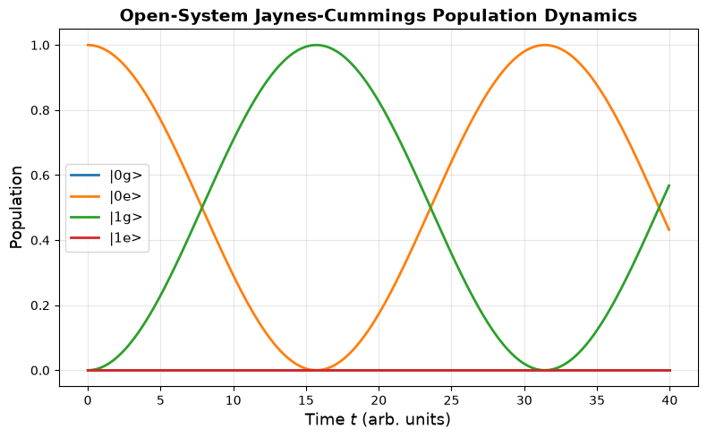
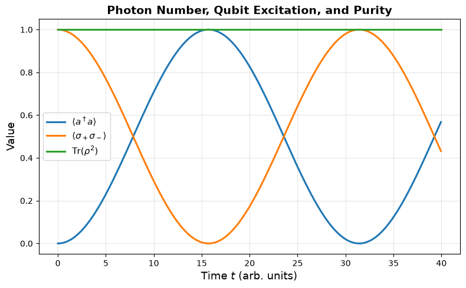

Computational Set 11: Open-System Jaynes-Cummings Dynamics#
Jay Foley, Associate Professor of Chemistry, University of North Carolina Charlotte
In this notebook, we simplify the two-qubit cavity model to a single qubit coupled to a single bosonic cavity mode. We first evolve the density matrix under the unitary Jaynes-Cummings Hamiltonian, then add dissipative dynamics using the Lindblad master equation.
The goal is to illustrate how coherent light-matter exchange is modified by:
cavity photon loss,
qubit spontaneous emission,
qubit pure dephasing.

The physical picture is a two-level matter system interacting with a quantized cavity mode. In this simplified model, the Hilbert space is
🧩 Step 1: Defining the Hamiltonian#
🎯 Learning Outcomes#
By the end of this notebook, you should be able to:
Represent a single qubit and a truncated cavity mode in a tensor-product basis.
Build the Jaynes-Cummings Hamiltonian in the composite Hilbert space.
Propagate a density matrix using the Liouville-von Neumann equation.
Add open-system effects using Lindblad jump operators.
Interpret population loss, decoherence, trace preservation, and purity decay.
🧮 Representing the states of our system#
We represent the cavity using the truncated photon-number basis
and the qubit using
The uncoupled product basis is
🔬 The Jaynes-Cummings Hamiltonian#
For one qubit coupled to one cavity mode, the Jaynes-Cummings Hamiltonian is
The terms are:
Bare qubit energy $\( H_{\rm qubit} = -\frac{\hbar\omega_0}{2}\sigma_z. \)$
Bare cavity energy $\( H_{\rm cav}=\hbar\omega a^\dagger a. \)$
Light-matter coupling $\( H_{\rm int}=\hbar g\left(a\sigma_+ + a^\dagger\sigma_-\right). \)$
The interaction conserves the total number of excitations. Starting from \(|0e\rangle\), the qubit excitation can coherently move into the cavity, producing Rabi oscillations between \(|0e\rangle\) and \(|1g\rangle\).
🧮 Step 2: Building the Basis States#
We now explicitly construct the uncoupled product basis using np.kron.
The ordering convention used throughout the notebook is:
import numpy as np
import numpy.linalg as la
import matplotlib.pyplot as plt
# Define the Hamiltonian parameters
omega_0 = 1.0 # qubit frequency
omega = 1.0 # cavity frequency
g = 0.1 # light-matter coupling strength
hbar = 1.0 # set hbar = 1 for convenience
# --- Basis vectors for individual subsystems ---
z_ket = np.array([[1.0], [0.0]]) # |0> cavity state
o_ket = np.array([[0.0], [1.0]]) # |1> cavity state
g_ket = np.array([[1.0], [0.0]]) # |g> qubit ground state
e_ket = np.array([[0.0], [1.0]]) # |e> qubit excited state
# --- Tensor products to build composite states ---
zg_ket = np.kron(z_ket, g_ket) # |0> ⊗ |g>
ze_ket = np.kron(z_ket, e_ket) # |0> ⊗ |e>
og_ket = np.kron(o_ket, g_ket) # |1> ⊗ |g>
oe_ket = np.kron(o_ket, e_ket) # |1> ⊗ |e>
basis_kets = [zg_ket, ze_ket, og_ket, oe_ket]
basis_names = [r"|0g>", r"|0e>", r"|1g>", r"|1e>"]
print("Basis states:")
for name, ket in zip(basis_names, basis_kets):
print(f"{name}: \n\n{ket}\n")
Basis states:
|0g>:
[[1.]
[0.]
[0.]
[0.]]
|0e>:
[[0.]
[1.]
[0.]
[0.]]
|1g>:
[[0.]
[0.]
[1.]
[0.]]
|1e>:
[[0.]
[0.]
[0.]
[1.]]
Step 3: Constructing the Operators#
We use the following qubit operators:
For the truncated cavity mode,
# --- Pauli and ladder operators for the qubit ---
sigma_z = np.array([[1.0, 0.0], [0.0, -1.0]])
sigma_minus = np.array([[0.0, 1.0], [0.0, 0.0]])
sigma_plus = sigma_minus.conj().T
# --- Ladder operators for the truncated cavity ---
a = np.array([[0.0, 1.0], [0.0, 0.0]])
adag = a.conj().T
# --- Identities ---
Icav = np.eye(2)
Iq = np.eye(2)
print("sigma_z:\n", sigma_z)
print("sigma_minus:\n", sigma_minus)
print("sigma_plus:\n", sigma_plus)
print("a:\n", a)
print("adag:\n", adag)
sigma_z:
[[ 1. 0.]
[ 0. -1.]]
sigma_minus:
[[0. 1.]
[0. 0.]]
sigma_plus:
[[0. 0.]
[1. 0.]]
a:
[[0. 1.]
[0. 0.]]
adag:
[[0. 0.]
[1. 0.]]
🧱 Building Operators in the Composite Hilbert Space#
Each subsystem is two-dimensional, so the total dimension is
To make an operator act on the full space, we tensor it with an identity on the subsystem it should not affect:
# --- Operators in the full cavity ⊗ qubit Hilbert space ---
am = np.kron(a, Iq)
ap = np.kron(adag, Iq)
sz = np.kron(Icav, sigma_z)
sm = np.kron(Icav, sigma_minus)
sp = np.kron(Icav, sigma_plus)
n_cav = ap @ am
qubit_excited_projector = sp @ sm
print("Full-space operator dimension:", am.shape)
Full-space operator dimension: (4, 4)
⚡ Step 4: Hamiltonian Terms#
Using the full-space operators, the Hamiltonian is
Because all operators are already represented in the full composite Hilbert space, the products in the interaction term are ordinary matrix products.
# --- Build the Jaynes-Cummings Hamiltonian ---
H = -hbar * omega_0 / 2 * sz
H += hbar * omega * n_cav
H += hbar * g * (am @ sp + ap @ sm)
print("H shape:", H.shape)
print("Hermitian check:", np.allclose(H, H.conj().T))
# Optional: inspect eigenvalues
energies, eigvecs = la.eigh(H)
print("Eigenvalues:")
print(energies)
H shape: (4, 4)
Hermitian check: True
Eigenvalues:
[-0.5 0.4 0.6 1.5]
🌱 Step 5: Defining the Initial State#
We start with the cavity empty and the qubit excited:
The density matrix is
This is a pure state with trace 1 and purity \(\mathrm{Tr}(\rho^2)=1\).
# --- Initial condition: |0e> ---
psi0 = ze_ket
rho0 = psi0 @ psi0.conj().T
print("Shape of psi0:", psi0.shape)
print("Norm squared:", np.vdot(psi0, psi0))
print("Density matrix shape:", rho0.shape)
print("Trace(rho0) =", np.trace(rho0))
print("Purity Tr(rho0^2) =", np.real(np.trace(rho0 @ rho0)))
Shape of psi0: (4, 1)
Norm squared: 1.0
Density matrix shape: (4, 4)
Trace(rho0) = 1.0
Purity Tr(rho0^2) = 1.0
⏱️ Step: Time-Domain Simulation — Jaynes-Cummings Dynamics with Lindblad Dissipation#
For closed-system unitary dynamics, the density matrix obeys the Liouville-von Neumann equation:
To model an open quantum system, we add Lindblad dissipators:
Here:
\(L_j\) is a jump operator describing one dissipative channel.
\(\gamma_j\) is the rate for that channel.
\(\{A,B\}=AB+BA\) is the anticommutator.
For this single-qubit/cavity model, useful jump operators are:
Process |
Rate |
Jump operator |
Physical meaning |
|---|---|---|---|
Cavity loss |
\(\kappa\) |
\(L_\kappa = a\) |
A photon leaks out of the cavity: $ |
Qubit spontaneous emission |
\(\gamma_1\) |
\(L_{\gamma_1}=\sigma_-\) |
The qubit relaxes: $ |
Qubit pure dephasing |
\(\gamma_\phi\) |
\(L_{\phi}=\sigma_+ \sigma_-\) |
The relative phase between $ |
In the code below, these operators are the full-space operators:
A small convention note: when using \(L_\phi=\sigma_z\), the off-diagonal qubit coherence decays at twice the coefficient multiplying the Lindblad dissipator. Therefore, the code below uses gamma_phi / 2 as the Lindblad rate if we want gamma_phi to represent the physical pure-dephasing contribution to the coherence decay rate.
def commutator(A, B):
"""Compute the commutator [A, B] = AB - BA."""
return A @ B - B @ A
def anticommutator(A, B):
"""Compute the anticommutator {A, B} = AB + BA."""
return A @ B + B @ A
def liouville_rhs(H, rho, hbar=1.0):
"""Unitary part of the density-matrix equation of motion."""
return -1j / hbar * commutator(H, rho)
def lindblad_rhs(rho, rates=None, jump_ops=None):
"""
Lindblad dissipative contribution to d rho / dt.
Parameters
----------
rho : np.ndarray
Current density matrix.
rates : list or array of float
Lindblad rates gamma_j.
jump_ops : list of np.ndarray
Jump operators L_j, represented in the full Hilbert space.
Returns
-------
drho_dt : np.ndarray
Dissipative contribution:
sum_j gamma_j * (L rho L† - 1/2 {L†L, rho})
"""
if rates is None or jump_ops is None:
return np.zeros_like(rho, dtype=complex)
if len(rates) != len(jump_ops):
raise ValueError("rates and jump_ops must have the same length.")
drho_dt = np.zeros_like(rho, dtype=complex)
#<-- Insert code here to loop over gammas and L operators
#<-- and evaluate the contribution to the dissipation from each one.
return drho_dt
def master_rhs(H, rho, rates=None, jump_ops=None, hbar=1.0):
"""Full Lindblad master-equation right-hand side."""
return liouville_rhs(H, rho, hbar=hbar) + lindblad_rhs(
rho, rates=rates, jump_ops=jump_ops
)
def rk4_step(rho, H, dt, rates=None, jump_ops=None, hbar=1.0):
"""
Apply a single RK4 step to evolve rho under unitary and Lindblad dynamics.
"""
k1 = master_rhs(H, rho, rates=rates, jump_ops=jump_ops, hbar=hbar)
k2 = master_rhs(H, rho + 0.5 * dt * k1, rates=rates, jump_ops=jump_ops, hbar=hbar)
k3 = master_rhs(H, rho + 0.5 * dt * k2, rates=rates, jump_ops=jump_ops, hbar=hbar)
k4 = master_rhs(H, rho + dt * k3, rates=rates, jump_ops=jump_ops, hbar=hbar)
rho_next = rho + (dt / 6.0) * (k1 + 2*k2 + 2*k3 + k4)
# Numerical cleanup: preserve Hermiticity to within RK/integration error.
rho_next = 0.5 * (rho_next + rho_next.conj().T)
return rho_next
🕒 Step 6: Simulating Open-System Dynamics#
We now choose dissipative rates and propagate the density matrix.
The jump operators are:
jump_ops = [am, sm, sp @ sm]
rates = [kappa, gamma1, gamma_phi / 2]
where:
amis cavity photon loss,smis qubit spontaneous emission,sp @ smis qubit pure dephasing.
Set any rate to zero to remove that dissipative channel.
# --- Dissipation parameters ---
kappa = 0.005 # cavity photon loss rate
gamma1 = 0.002 # qubit spontaneous emission rate
gamma_phi = 0.003 # physical pure-dephasing rate for qubit coherences
jump_ops = [am, sm, sz]
rates = [kappa, gamma1, gamma_phi / 2]
# --- Time-grid parameters ---
dt = 0.05
n_time = 800
# --- Initial condition ---
rho = np.copy(rho0)
# --- Storage arrays ---
t = np.zeros(n_time)
pops = np.zeros((n_time, rho.shape[0]))
trace_rho = np.zeros(n_time, dtype=complex)
purity = np.zeros(n_time)
cavity_photon_number = np.zeros(n_time)
qubit_excited_population = np.zeros(n_time)
# --- Time evolution ---
for i in range(n_time):
t[i] = i * dt
# Store observables before taking the next step
pops[i, :] = np.real(np.diag(rho))
trace_rho[i] = np.trace(rho)
purity[i] = np.real(np.trace(rho @ rho))
cavity_photon_number[i] = np.real(np.trace(rho @ n_cav))
qubit_excited_population[i] = np.real(np.trace(rho @ qubit_excited_projector))
rho = rk4_step(rho, H, dt, rates=rates, jump_ops=jump_ops, hbar=hbar)
rho_final = rho
print("Simulation complete!")
print("Final time:", t[-1])
print("Trace(rho_final) =", np.trace(rho_final))
print("Purity Tr(rho_final^2) =", np.real(np.trace(rho_final @ rho_final)))
Simulation complete!
Final time: 39.95
Trace(rho_final) = (0.999999999999998+0j)
Purity Tr(rho_final^2) = 0.9999999999944413
# 🎨 Visualize populations in the uncoupled basis
plt.figure(figsize=(8, 5))
for idx, name in enumerate(basis_names):
plt.plot(t, pops[:, idx], lw=2.0, label=name)
plt.xlabel(r"Time $t$ (arb. units)", fontsize=13)
plt.ylabel("Population", fontsize=13)
plt.title("Open-System Jaynes-Cummings Population Dynamics", fontsize=14, weight="bold")
plt.grid(alpha=0.3)
plt.legend(fontsize=11, frameon=True)
plt.tight_layout()
plt.show()

# 🎨 Visualize expectation values and purity
plt.figure(figsize=(8, 5))
plt.plot(t, cavity_photon_number, lw=2.2, label=r"$\langle a^\dagger a\rangle$")
plt.plot(t, qubit_excited_population, lw=2.2, label=r"$\langle \sigma_+\sigma_-\rangle$")
plt.plot(t, purity, lw=2.2, label=r"$\mathrm{Tr}(\rho^2)$")
plt.xlabel(r"Time $t$ (arb. units)", fontsize=13)
plt.ylabel("Value", fontsize=13)
plt.title("Photon Number, Qubit Excitation, and Purity", fontsize=14, weight="bold")
plt.grid(alpha=0.3)
plt.legend(fontsize=11, frameon=True)
plt.tight_layout()
plt.show()

💭 Reflection Questions#
What happens to the Rabi oscillations as
kappa,gamma1, orgamma_phiincrease?Which dissipative channels change the populations directly?
Which dissipative channel primarily destroys coherence without directly changing populations?
Why should the trace of \(\rho\) remain close to 1 during Lindblad evolution?
How does the purity \(\mathrm{Tr}(\rho^2)\) distinguish coherent unitary evolution from dissipative open-system evolution?